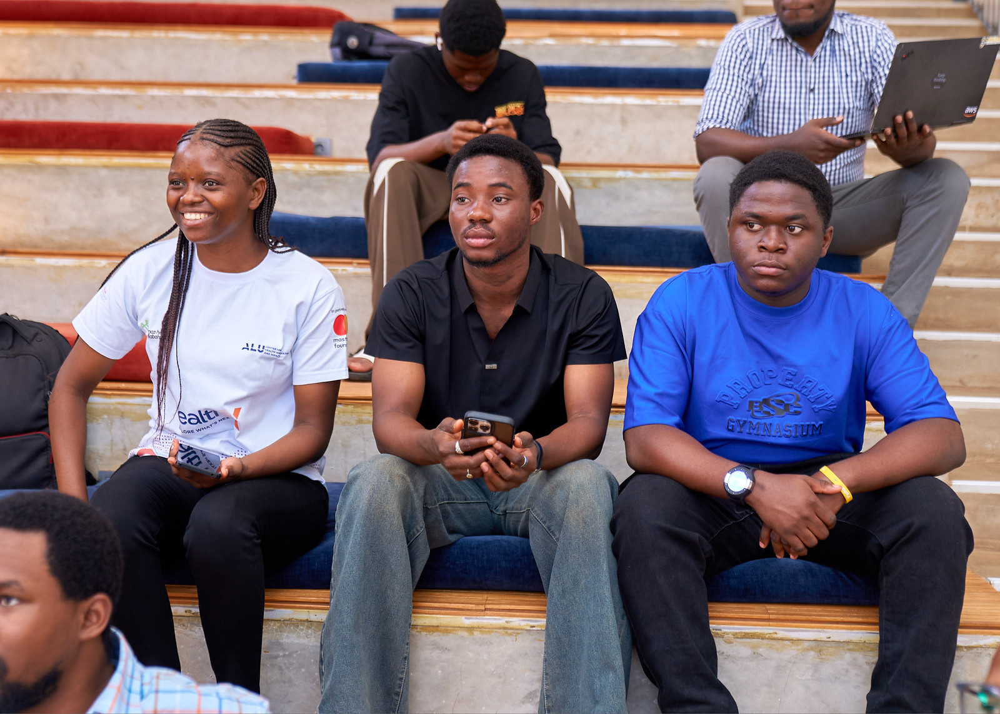

AFRICAN LEADERSHIP UNIVERSITY
IEEE ALU Student Branch
Explore student activities from the ALU Student Branch in IEEE Rwanda’s photo collection.
View branch activitiesBranch officers and contact details will be added after confirmation.
IEEE student communities on campuses across Rwanda.
Connect with students at your university, take part in technical activities, and get involved in running your branch.

Explore student activities from the ALU Student Branch in IEEE Rwanda’s photo collection.
View branch activitiesBranch officers and contact details will be added after confirmation.
The IEEE student community at Carnegie Mellon University Africa.
Branch officers and contact details will be added after confirmation.
The IEEE student community at the University of Rwanda.
Branch officers and contact details will be added after confirmation.
Your campus branch can help you understand membership, meet fellow students, and find activities to join.
IEEE membershipFind official guidance on branch operations and prepare an activity brief for your team.